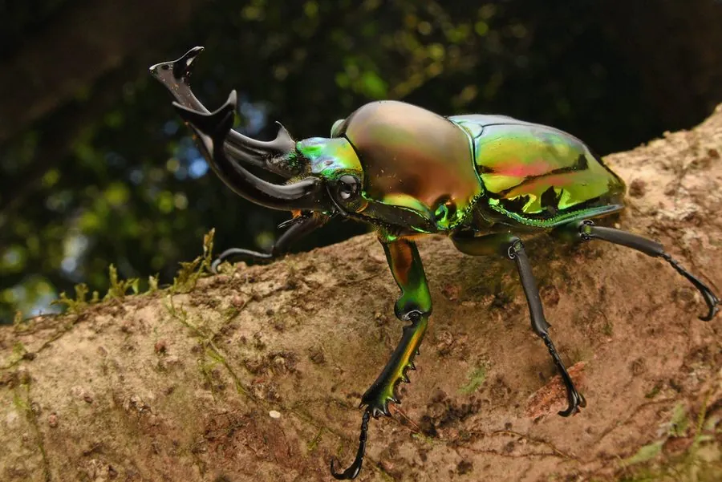

昆虫 · 动物界
彩虹锹甲 Phalacrognathus muelleri

鞘翅呈金属彩虹光泽的锹甲，大颚向上弯曲如钳，是澳洲雨林中的明星甲虫，也是甲虫爱好者追捧的饲养种类。
- 分类
- 门节肢动物门纲昆虫纲目鞘翅目科锹甲科属彩虹锹甲属
- 栖息环境
- 澳大利亚北部的热带雨林，成虫夜间活动于树干和腐果上
- 地理分布
- 澳大利亚昆士兰州北部
- 保护级别
- 暂无评估
物种志
彩虹锹甲雄虫体长 40–60 mm，雌虫较小。体表具金属光泽，鞘翅可随光线角度变化呈现红、紫、绿、蓝等彩虹色；雄虫的大颚发达，向上弯曲并带有齿突，形如一把弯钳；雌虫大颚短小。
彩虹锹甲分布于澳大利亚昆士兰州北部的热带雨林，是当地最著名的甲虫之一。成虫多在夜间活动，取食树汁和腐熟的水果，白天藏在树皮缝隙或落叶下。雄虫之间会为大颚相争，争夺配偶和取食地点，打斗时把对手掀翻在地。幼虫生活在腐木中，取食腐朽的木质，经过约一年才能化蛹。彩虹锹甲因金属般的色彩而成为甲虫收藏和人工饲养的热门种类，野生种群受雨林开发和采集的影响，澳大利亚已对其实施出口管理。
形态与习性
- 食性成虫取食树汁和腐熟水果，幼虫取食腐木
- 体长雄虫 40–60 mm，雌虫较小
- 大颚雄虫大颚向上弯曲如钳，带齿突
- 体色鞘翅呈金属彩虹光泽，随角度变化
- 打斗雄虫用大颚把对手掀翻，争夺配偶
- 保护受雨林开发和采集影响，澳大利亚管制出口
趣味知识
- 彩虹锹甲的鞘翅没有色素，颜色来自结构对光线的干涉。
- 雄虫打斗时会把对手整个掀翻，靠的是那对弯曲的大颚。
- 它的幼虫要在腐木里生活约一年，才会化蛹羽化。